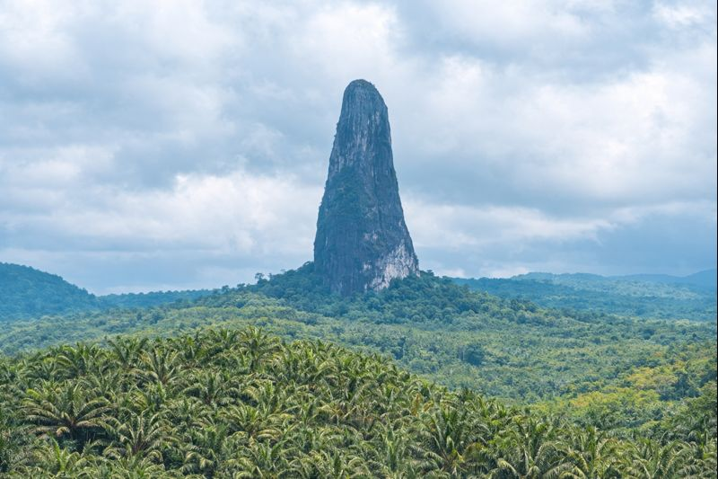

Nord Sao Tomé
45k
Lagoa Azul
Un lagon aux eaux turquoises bordé de baobabs millénaires, idéal pour le snorkeling

RetourUne symphonie de chocolat, de café et de nature sauvage
Sao Tomé-et-Principe, surnommées les "Îles Chocolat", sont un joyau méconnu flottant sur l'équateur. Cet archipel volcanique offre l'un des paysages les plus spectaculaires d'Afrique Centrale. Dominé par l'emblématique Pico Cão Grande, une aiguille volcanique perçant la canopée, le pays est une jungle luxuriante bordée de plages de sable doré où les tortues viennent pondre. Anciennes terres de plantations de cacao et de café (les Roças), les îles conservent un charme colonial unique mêlé à une douceur de vivre légendaire, le fameux "Leve Leve". Que vous exploriez les profondeurs du Parc National d'Obo ou que vous goûtiez au meilleur chocolat du monde directement à la source, Sao Tomé-et-Principe promet une déconnexion absolue.
Découvrez les 15 merveilles des Îles Chocolat
Un lagon aux eaux turquoises bordé de baobabs millénaires, idéal pour le snorkeling

Une aiguille phonolithique spectaculaire s'élevant à 370m au-dessus de la jungle

Un spectacle naturel où les vagues s'engouffrent dans un tunnel de basalte créant d'immenses jets d'eau

La plus majestueuse des anciennes plantations, témoin de l'âge d'or du cacao

Une plage sauvage réputée pour l'observation de la ponte des tortues marines

Traversez la ligne de l'Équateur sur cet îlot paradisiaque aux plages immaculées

Une chute d'eau rafraîchissante au cœur d'une forêt de fougères arborescentes

Un sanctuaire de biodiversité unique abritant de nombreuses espèces endémiques

Une capitale à taille humaine avec son marché coloré et sa cathédrale portugaise

Une piscine naturelle formée par les rochers de basalte noir, face à l'océan

Le berceau du café Arabica et Robusta, avec son musée et ses dégustations

La plus petite ville du monde, capitale paisible de l'île de Príncipe (UNESCO)
Un panorama époustouflant sur les pics volcaniques de Príncipe plongeant dans la mer
La plage iconique de Príncipe en forme de croissant, rendue célèbre par les publicités Bacardi
Une chute d'eau cachée dans la forêt tropicale de Príncipe, accessible par un sentier sauvage
L'esprit "Leve Leve", l'art de vivre au rythme de l'équateur.
La culture de Sao Tomé-et-Principe est un mélange unique de racines africaines (Angola, Cap-Vert, Mozambique) et d'héritage portugais. Cette identité s'exprime à travers le "Tchiloli", une forme de théâtre de rue médiéval unique au monde, et les rythmes entraînants de la Puxa et du Socopé. L'histoire des îles est indissociable de celle du cacao et du café, dont elles furent les premiers producteurs mondiaux au début du XXe siècle. Aujourd'hui, les "Roças" (anciennes plantations) forment le cœur social et historique du pays. L'esprit "Leve Leve" (doucement, doucement) n'est pas qu'une devise, c'est une philosophie de vie basée sur la patience, la courtoisie et le respect du temps naturel.
Un spectacle de rue fascinant mêlant théâtre, danse et musique, héritage des mystères médiévaux portugais.
La vie communautaire au cœur des anciennes plantations, véritables villes dans la ville avec leur architecture unique.
Une philosophie de vie apaisée qui invite à savourer chaque instant et à respecter le rythme de la nature.
Une cuisine généreuse basée sur le poisson frais, les fruits tropicaux et l'omniprésent chocolat.

Les saveurs et l'artisanat d'exception de Sao Tomé-et-Principe. Du chocolat pur au café des montagnes.
 Gourmet
Gourmet
Produit artisanalement à partir des fèves natives de l'île, considéré comme l'un des meilleurs au monde.
 Prestige
Prestige
Café de haute altitude aux arômes intenses et délicats, cultivé de manière biologique.
 Rare
Rare
Vanille d'exception cultivée à l'ombre de la forêt tropicale, au parfum floral et intense.
Huile de coco pressée à froid de manière traditionnelle, idéale pour les soins de la peau et des cheveux.
Vannerie traditionnelle robuste réalisée à la main par les artisans des villages côtiers.
Savon naturel hydratant fabriqué à partir du pur beurre de cacao de l'archipel.

Príncipe, Ultra-Luxe & Design

Príncipe, Île Privée

São Tomé, Luxe en ville

São Tomé, Confort & Chic

Côte Nord, Nature Brute

Côte Sud, Charme Tropical
La cuisine santoméenne est une explosion de saveurs créoles, mélangeant poissons frais, herbes aromatiques et produits de la terre.
Le plat national : poisson ou viande séchée mijoté avec de nombreuses herbes, légumes et huile de palme.
Poisson du jour fraîchement pêché, grillé au feu de bois et servi avec une sauce pimentée.
Riz au lait crémeux au lait de coco frais et à la cannelle, un dessert réconfortant.
Bananes plantains frites, l'accompagnement sucré-salé indispensable de tous les repas.
Poulpe préparé de manière traditionnelle, tendre et parfumé aux herbes locales.
Une sauce pimentée ultra-forte qui accompagne presque tous les plats pour les amateurs de sensations.
Fruit à pain grillé, une base énergétique délicieuse qui remplace souvent le pain.
Ragoût de haricots et viandes variées, version santoméenne du classique lusophone.
Un dessert à base de noix de coco et de sucre, typique des fêtes de village.
Omelette généreuse aux crevettes fraîches et herbes aromatiques de l'île.
Confiture ou pâte de goyave artisanale, à déguster avec du fromage frais local.
Infusion de citronnelle fraîche (herbe prince), la boisson bien-être de l'archipel.
Partagez les traditions vivantes de Sao Tomé-et-Principe.
Spectacles de rue uniques à travers les villages (Août/Septembre), mêlant tragédie et célébration populaire.
La grande fête traditionnelle de l'île de Príncipe (15 Août), un événement communautaire majeur.
Célébrations nationales (12 Juillet) avec musique, danses Socopé et festivités sur tout l'archipel.
La saison sèche "Gravana". Le climat est plus frais, avec peu de pluie, idéal pour la randonnée et l'exploration des Roças. C'est aussi la saison des baleines.
Saison plus chaude et humide. C'est la période idéale pour l'observation des tortues marines (ponte et éclosion) et pour voir les cascades à leur débit maximum.
L'archipel est extrêmement sûr et paisible. Les vols sont rares. Les habitants sont d'une gentillesse et d'une hospitalité sincères.
Prévention contre le paludisme conseillée. Buvez exclusivement de l'eau en bouteille. Pas de vaccins obligatoires mais mise à jour conseillée.
Exemption de visa pour de nombreuses nationalités (UE, USA, Canada) pour des séjours de moins de 15 jours. Passeport valide 6 mois.
Dobra (STN). L'Euro est largement accepté. Quelques distributeurs à São Tomé ville. Les cartes bancaires sont peu utilisées hors grands hôtels.
Expert Cacao & Roças
Né dans une Roça, Joao vous fera découvrir l'histoire passionnante du chocolat et les secrets des anciennes plantations.
Experte Nature & Biodiversité
Biologiste passionnée, Lina vous guidera dans le parc d'Obo pour observer les oiseaux et plantes rares de l'archipel.
Expert Île de Príncipe
Guide local sur Príncipe, Marco vous emmènera explorer cette île sauvage classée réserve de biosphère par l'UNESCO.